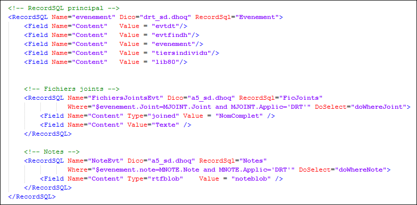

Cette section permet de définir les champs de la base ERP que l’on souhaite ajouter au document de la base Search.
C’est une section complexe qui permet de définir une arborescence de RecordSQL.
La première balise <RecordSQL> définit le RecordSQL par lequel se fera l'accès à la base de l'ERP. Chaque ligne renvoyée par ce RecordSQL génère une instance d'un document dans la base Search. Nous l'appellerons le "RecordSQL de base".
Les sous-balises <Field> définissent les fields à ajouter dans la base Search en provenance de la base ERP.

Les balises <RecordSQL> peuvent être imbriquées.
Le premier niveau correspond au RecordSQL de base d’accès à l’ERP.
Pour chaque ligne lue de ce RecordSQL, le moteur lit toutes les lignes des RecordSQL du niveau inférieur (en respectant la condition de jointure définie dans le RecordSQL du niveau inférieur qui lie les deux RecordSQL).
Nous appellerons RecordSQL secondaires les RecordSQL de niveau inférieur.
Remarque
Il n’y a pas de limite au nombre de niveaux.
Il peut y avoir plusieurs RecordSQL au même niveau.